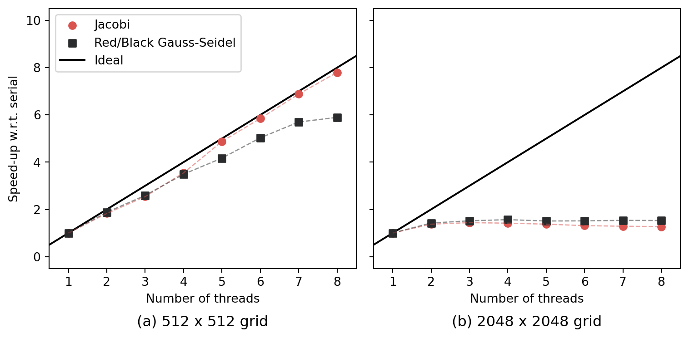
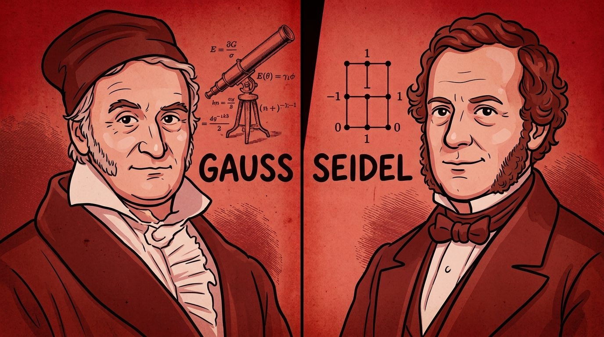
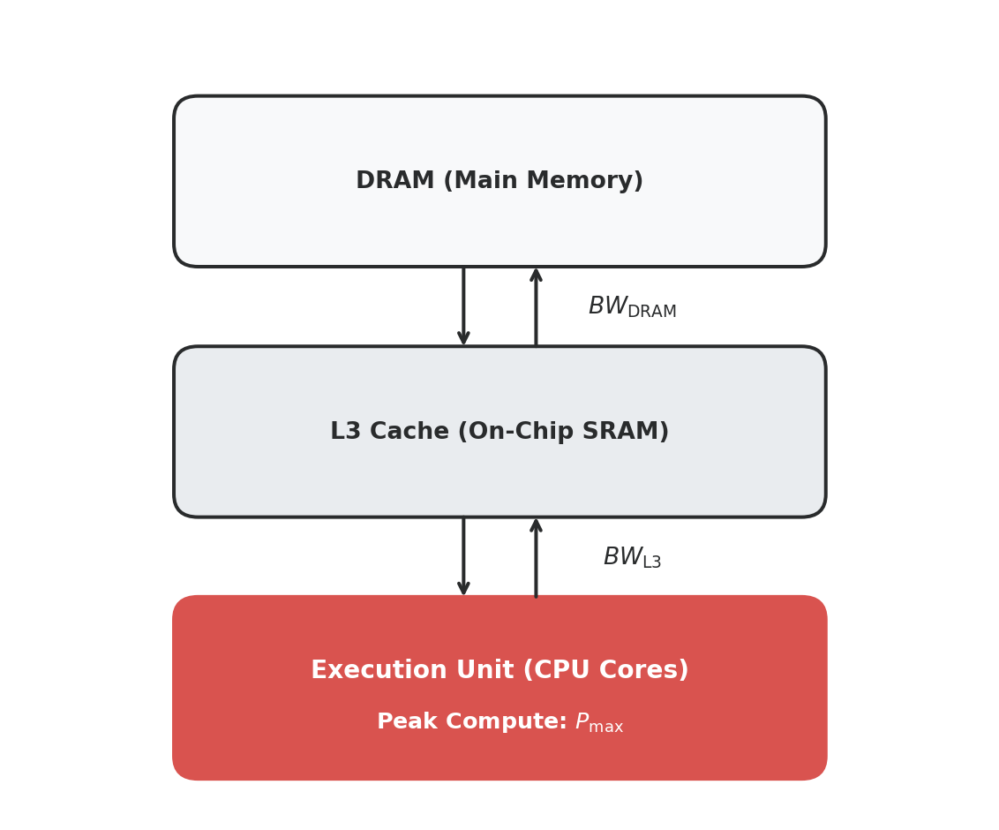
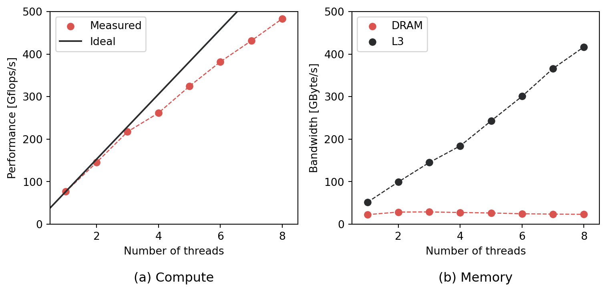
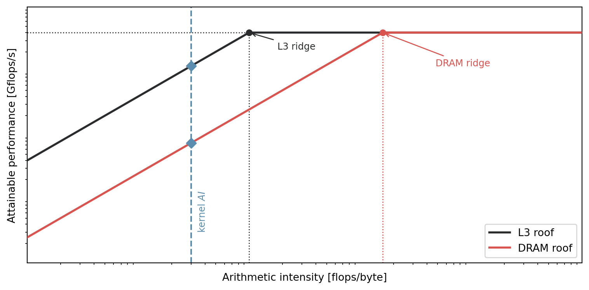

The roof, the roof, the roof is on fire!
A short introduction to performance engineering
blog

We made it! We finally ended up with an implementation of Gauss-Seidel that solves our test problem (marginally) faster than Jacobi while also preserving its parallelization capabilities. Last time, we concluded this success with a parallelization study and the results looked somewhat similar to what is depicted in the left panel of the figure below. If we stop there, we may come up with the following conclusion: every time we double the number of threads, the solver computes the solution twice as fast. No doubt that, for this particular test case – a 512 \(\times\) 512 grid – it is effectively the case. If you don’t know any better, it may also be tempting to conclude that this scaling would hold true for larger grids. Or that, if I increase the number of points in each direction by 2 (so four times as many points), using four times as many threads would allow me to compute the solution in the same wallclock time. Pretty intuitive, right? But the right panel of this figure shows otherwise…
For the 512 \(\times\) 512 grid, the scaling is almost perfect. Every time we double the number of threads, we get a 2\(\times\) speed-up. But for the 2048 \(\times\) 2048 grid, almost all of the speed-up happens between one and two threads. Further doubling the number of threads does absolutely nothing, so clearly our intuition is wrong. But why? Is there a bug in our code, or have we simply slammed into a physical boundary of our hardware? This is what we’ll try to unravel in this post.
A simplistic model of the hardware
Processing units, whether CPU or GPU, are fantastic feats of modern technology. Just to give some intuition about how complex these can be, below is a block diagram of the AMD Bulldozer microprocessor.

{kind=link}
Personally, I can’t really grasp all of the intricacies in this diagram. And mind you, this is a simplified representation, so I let you imagine how complex the true hardware can be! There is no way we can understand the different behaviour for the 512² and 2048² grids by tackling this level of hardware details head-on. We thus need to simplify things. And over-simplify we will.
Two resources: computation and memory
At a very, VERY high-level, CPUs can be understood as machines consuming two primary resources:
- Compute: basically how fast the processor can run. It is typically measured in billions of floating point operations per second (Gflops/s).
- Memory bandwidth: essentially how quickly data can be transferred through the memory hierarchy. It is typically measured in billions of bytes per second (GBytes/s).
In the rest of this post, we’ll actually consider two different types of memory, each with its own bandwidth:
- DRAM (Dynamic Random-Access Memory): The main off-chip system memory that offers large storage capacity but exhibits high latency and limited bandwidth compared to on-chip caches.
- L3 Cache: A fast, shared on-chip buffer designed to store frequently accessed data close to the CPU cores to minimize latency-heavy requests to main memory (DRAM).
With only these three elements, we arrive at the following (very) simplified block representation.

In the above diagram, \(P_{\max}\) denotes the maximum number of floating point operations per second the processor can do, while \(BW_{\text{DRAM}}\) and \(BW_{\text{L3}}\) denote the bandwidths of the DRAM and L3 cache, respectively. I’ll be the first to admit: it is a tremendously gross over-simplification of the (already simplified) diagram presented earlier. Yet, it is surprising how far this simplified model of the hardware can take us in the analysis of our kernels’ performance. But before showing you that, let us put some concrete numbers on \(P_{\max}\), \(BW_{\text{DRAM}}\) and \(BW_{\text{L3}}\).
Measuring the machine with likwid
We could trust the vendors and get these numbers from their datasheet. However, these are often slightly optimistic estimates, so we’ll actually use some well-defined benchmarks to get more realistic values. For that purpose, we’ll use likwid: a lightweight suite of command-line tools and a library designed for performance-oriented programming and hardware analysis on Linux systems. likwid stands for Like I know What I'm Doing. It is developed by the same group behind osaca, the open-source code analyzer we used here. I won’t get into the details of how to install likwid, nor how to use its different utilities. The documentation is rather comprehensive, and the team has uploaded a handful of tutorial-style videos online (here). So with that out of the way, let’s get to it.
Everything that follows is me using
likwid to the best of my understanding. If I’m doing anything wrong or misinterpreting something, feel free to reach out. I’d love to stand corrected.What does my hardware look like? First things first, let’s see what my hardware actually is. We’ll use likwid-topology, a dead simple utility printing the thread and cache topology on CPUs and GPUs. Here is what the output looks like for me.
❯ likwid-topology
--------------------------------------------------------------------------------
CPU name: 11th Gen Intel(R) Core(TM) i7-11850H @ 2.50GHz
CPU type: Intel Tigerlake processor
CPU stepping: 1
********************************************************************************
Hardware Thread Topology
********************************************************************************
Sockets: 1
CPU dies: 1
Cores per socket: 8
Threads per core: 2
--------------------------------------------------------------------------------
HWThread Thread Core Die Socket Available
0 0 0 0 0 *
1 0 1 0 0 *
2 0 2 0 0 *
3 0 3 0 0 *
4 0 4 0 0 *
5 0 5 0 0 *
6 0 6 0 0 *
7 0 7 0 0 *
8 1 0 0 0 *
9 1 1 0 0 *
10 1 2 0 0 *
11 1 3 0 0 *
12 1 4 0 0 *
13 1 5 0 0 *
14 1 6 0 0 *
15 1 7 0 0 *
--------------------------------------------------------------------------------
Socket 0: ( 0 8 1 9 2 10 3 11 4 12 5 13 6 14 7 15 )
--------------------------------------------------------------------------------
********************************************************************************
Cache Topology
********************************************************************************
Level: 1
Size: 48 kB
Cache groups: ( 0 8 ) ( 1 9 ) ( 2 10 ) ( 3 11 ) ( 4 12 ) ( 5 13 ) ( 6 14 ) ( 7 15 )
--------------------------------------------------------------------------------
Level: 2
Size: 1.25 MB
Cache groups: ( 0 8 ) ( 1 9 ) ( 2 10 ) ( 3 11 ) ( 4 12 ) ( 5 13 ) ( 6 14 ) ( 7 15 )
--------------------------------------------------------------------------------
Level: 3
Size: 24 MB
Cache groups: ( 0 8 1 9 2 10 3 11 4 12 5 13 6 14 7 15 )
--------------------------------------------------------------------------------
********************************************************************************
NUMA Topology
********************************************************************************
NUMA domains: 1
--------------------------------------------------------------------------------
Domain: 0
Processors: ( 0 8 1 9 2 10 3 11 4 12 5 13 6 14 7 15 )
Distances: 10
Free memory: 19514.5 MB
Total memory: 31814.9 MB
--------------------------------------------------------------------------------There is a lot to unpack here, and more than we actually need. The most important points are: it is an Intel TigerLake processor, with a single socket, 8 cores per socket, and up to 2 threads per core. Additionally, the L3 cache size is 24 MB, shared across all the threads. Moreover, since we can have two threads per core, we’ll use only every other thread to ensure 1 thread/core in the rest.
If you are familiar with Jacobi and performance engineering, you may already know why this 24 MB number is the key to our apparent mystery…
How to evaluate \(P_{\max}\)? To the raw performance now. We’ll use the likwid-bench utility, providing a large collection of standardized benchmarks to assess hardware performance. For peak performance, we’ll use peakflops_avx_fma. This kernel measures achievable (not marketed) peak double-precision throughput: it runs tight loops of independent, back-to-back FMA (fused multiply-add) instructions on a small working set (here, 32 kB) sized to stay resident in L1 cache. Since each FMA does 2 flops and the AVX2 FMA units on my CPU operate on 4 doubles at a time across two ports, this saturates the floating-point execution units and reports the sustained flops/s the core(s) can actually deliver. The estimate is typically somewhat below the vendor’s theoretical peak (turbo/clock throttling, instruction issue overhead, etc). Running it across thread counts gives the compute-scaling curve used to fix \(P_{\max}\) later on.
What about \(BW_{\text{DRAM}}\) and \(BW_{\text{L3}}\)? Again, we’ll use the likwid-bench utility, this time however with the triad benchmark. This kernel implements the classic STREAM Triad operation a[i] = b[i] + s*c[i], over a large array. Because the arrays are always freshly loaded from memory or cache and immediately used once (dropped, not reused), the memory system – not the floating point units (FPU) – is the bottleneck. The benchmark thus reports sustained achievable bandwidth. Which level of the hierarchy gets stressed is controlled purely by working-set size: a 1 GB working set can’t fit in any cache on this processor, so it exercises DRAM bandwidth. Alternatively, an 8 MB working set fits inside the 24 MB shared L3, so it exercises L3 bandwidth instead. Same kernel, same thread-scaling sweep, two different memory levels depending on that one parameter.

likwid-bench and averaged over 10 trials: (a) compute performance scaling compared to ideal, and (b) memory bandwidth saturation across 1 to 8 threads. The peak performance is estimated to be 483 Gflops/s, while the memory bandwidth is around 28 GBytes/s for DRAM, and at least 417 GBytes/s for the L3 cache.The figure above depicts the results of this hardware characterization experiment with an increasing number of threads being employed. Here are the most important take-aways:
- Compute scales (almost) linearly with threads; DRAM bandwidth basically doesn’t. Going from 1 to 8 threads roughly multiplies peak performance by 6.7 (from 76 Gflops/s to 484 Gflops/s), but DRAM bandwidth peaks at just 2 or 3 threads (~ 28 GBytes/s) and then decreases as more threads pile onto an already-saturated memory controller. A single thread already gets you most of the DRAM bandwidth this machine will ever offer.
- L3 bandwidth dwarfs DRAM bandwidth and shows no sign of saturating. At 8 threads, L3 delivers 416 GBytes/s against DRAM’s 23 GBytes/s – better than 15\(\times\) more – and it’s still climbing at N=8 rather than plateauing. This gap is precisely why a problem that fits in L3 can keep scaling with threads long after a DRAM-resident problem has hit a wall.
- Compute’s own scaling isn’t quite “ideal” either. The measured curve in panel (a) already sits visibly below the ideal linear reference by 8 threads. This is a reminder that \(P_{\max}\) itself softens as more cores turbo down together, so even the “good” resource isn’t a fixed constant once enough threads are in play.
We now have all of the numbers we need to characterize the hardware. Let’s move on with trying to model the performance of our kernels and see how our model compares with actual computations.
From hardware to performance: the roofline model
We now have three numbers in hand: \(P_{\max}\), \(BW_{\text{DRAM}}\), and \(BW_{\text{L3}}\). But knowing your hardware’s ceilings doesn’t yet tell you how fast a given kernel should run. So let’s see how to do that.
The theoretical roofline
Arithmetic intensity. The one ingredient missing is a way to characterize the kernel itself. For that, define the arithmetic intensity of a kernel as
\[ \text{AI} = \dfrac{\text{flops}}{\text{bytes moved}}. \]
This is a property of the algorithm and its implementation, not of the hardware. A kernel that does a lot of arithmetic per byte it touches (high AI) can, in principle, keep the FPUs busy without waiting on memory. Conversely, a kernel that touches a lot of memory for very little arithmetic (low AI) will spend most of its time waiting on data, no matter how fast the processor is. Crucially, for a stencil kernel like Jacobi or Gauss-Seidel, both the flop count and the byte count per grid point are fixed by the discretization, so AI is a constant for the kernel. It does not depend on the grid size \(n\), only the sweep-level cost does.
Resource allocation as a linear program. Here’s the idea. Rather than asking what does the roofline plot look like, let’s ask a more direct question: given our three hardware ceilings and a kernel’s arithmetic intensity, what is the best throughput we could possibly hope for? That’s an optimization problem, and a particularly simple one: a linear program.
Since we’ve been measuring everything in sweeps over the whole grid since the very first post, let’s keep using that unit rather than switching to raw Gflops/s. If \(f(n)\) denotes the number of flops per sweep for a grid of size \(n\), then \(S = P/f(n)\) converts a flop rate \(P\) into sweeps per second. This is just a rescaling of the flop-based problem by the constant \(1/f(n)\), so it doesn’t change which constraint ends up binding. It just expresses the answer in units we already care about.
The resulting linear program reads
\[ \begin{aligned} \mathrm{maximize} & \quad S \\ \mathrm{subject~to} & \quad S \cdot f(n) \leq P_{\max} \\ & \quad S \cdot f(n) \leq BW_{\text{DRAM}} \times AI. \end{aligned} \]
The first constraint says: no matter what, you can’t sweep faster than the processor can compute. The second says: no matter what, you can’t sweep faster than data can be fed to it from DRAM. This simplified model thus give us an upper bound on the attainable throughput: whichever constraint is tighter is the active roof, exactly the \(\min\) that gives the roofline its characteristic bent shape.
Accounting for L3. The same reasoning that gave us the DRAM constraint applies to any level of the memory hierarchy a kernel’s working set happens to reside in – but not by adding a second, simultaneous bandwidth constraint. If the working set fits inside the 24 MB L3 cache, DRAM traffic becomes a one-off cost that gets amortized away over the many sweeps required by the solver to converge, so DRAM bandwidth simply isn’t part of the story for that grid size. Conversely, once the working set spills out of L3, every sweep pays the full cost of moving data from DRAM, and L3 residency isn’t happening at all. The two ceilings are mutually exclusive regimes, selected by problem size – not competitors in the same constraint.
This means we don’t need to change the structure of the LP at all: we only need to let the bandwidth ceiling itself depend on \(n\),
\[ BW(n) = \begin{cases} BW_{\text{L3}} & \text{if the working set fits in L3}, \\ BW_{\text{DRAM}} & \text{otherwise}, \end{cases} \]
giving the final LP formulation
\[ \begin{aligned} \mathrm{maximize} & \quad S \\ \mathrm{subject~to} & \quad S \cdot f(n) \leq P_{\max} \\ & \quad S \cdot f(n) \leq BW(n) \times AI \end{aligned} \] Rather than treating “L3-resident” and “DRAM-resident” as two separate stories requiring two separate analyses, they’re now a single feasible region whose second constraint simply looks up the right ceiling for the grid size at hand. Which constraint binds – compute, or whichever memory level is relevant – depends entirely on where your problem happens to sit, through \(n\)’s effect on \(f(n)\) and the working-set size. This is what will let a single model account for both panels of the very first figure in this post.
This now becomes a parametric LP. Nothing actually prevents us from further parameterizing \(P_\max\) and \(BW(n)\) as a function of the number of threads as well.
A subtlety: the roof moves with the problem size
If you’ve come across a roofline plot before, you’ve probably seen it used to compare several different kernels or algorithms, each sitting at its own arithmetic intensity, against a single fixed roof. Our situation is a little different, and worth walking through carefully: since \(AI\) here is a property of the kernel alone, it doesn’t move as the grid size \(n\) changes – your kernel sits at the exact same horizontal position on the plot no matter how big a problem you throw at it. What changes with \(n\) is which roof is above that point.
Picture two roofline curves drawn on the same axes, sharing the same flat compute ceiling \(P_{\max}\) but with two different sections: a higher sloped section governed by \(BW_{\text{L3}}\), and a lower one governed by \(BW_{\text{DRAM}}\). Because \(BW_{\text{L3}} \gg BW_{\text{DRAM}}\), the L3 roof’s ridge point sits much further to the left than the DRAM roof’s – meaning it takes a much lower \(AI\) to be compute-bound under it. Jacobi and Gauss-Seidel are stencil kernels with a handful of flops per grid point against several bytes of neighbor data, which puts them at fairly low arithmetic intensity – plausibly low enough to sit on the sloped part of both roofs, not just the DRAM one. If that holds up once we compute the actual numbers in the next section, the real story isn’t “compute-bound at small \(n\), memory-bound at large \(n\)” – it’s memory-bound throughout, just against two very different bandwidths. Either way, the mechanism is the same: nothing about the kernel changes as \(n\) grows, but the ground shifts underneath it once the working set spills out of L3, and it’s this shift – from one sloped ceiling to a much lower one – that produces the two panels in this post’s opening figure.

So, what about Jacobi and Gauss-Seidel then?
Where does that leave us?
If you want to read more of my stuff